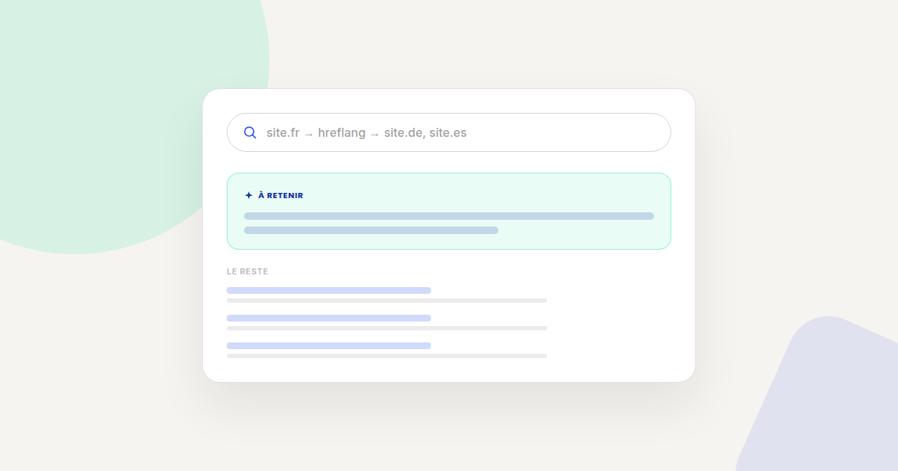
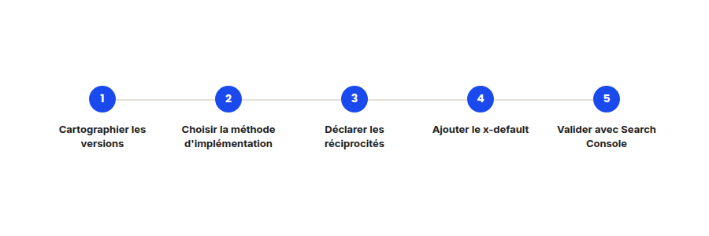

SEO international : la méthode hreflang sans les erreurs qui l'annulent
hreflang a la particularité d'échouer silencieusement : une erreur d'implémentation ne provoque aucune erreur visible, elle annule simplement l'effet de l'attribut sans que rien ne le signale. Voici la méthode que je suis pour l'installer sans ce piège.

hreflang indique à Google quelle version linguistique ou régionale d'une page proposer à quel visiteur. Sur le papier, c'est simple. Dans la pratique, c'est l'un des attributs techniques les plus souvent mal implémentés, parce qu'une erreur ne génère aucun message d'erreur visible — le site continue de fonctionner normalement, hreflang ne fait simplement plus son travail.
Étape 1 — Cartographier les versions avant d'implémenter quoi que ce soit
Avant d'écrire une seule ligne de balisage, listez précisément quelles pages existent dans quelles langues et pour quels pays : une version française pour la France n'est pas la même chose qu'une version française pour la Belgique ou le Canada, même si le contenu se ressemble.
Étape 2 — Choisir une seule méthode d'implémentation, jamais deux
hreflang peut être déclaré dans le <head> HTML, dans les en-têtes HTTP, ou dans un sitemap XML dédié. Les trois fonctionnent, mais mélanger deux méthodes sur un même site crée des signaux contradictoires que Google ne sait pas prioriser de façon fiable — choisissez-en une et gardez-la partout.
Étape 3 — Déclarer la réciprocité entre toutes les versions
- Chaque page doit référencer toutes les autres versions, y compris elle-même. La version française doit lister la version anglaise et allemande, et la version anglaise doit lister la française en retour — une déclaration à sens unique est ignorée par Google.
- Le code de région doit respecter la norme ISO 3166-1. Des codes non standards, même intuitifs (comme « UK » au lieu de « GB »), sont silencieusement ignorés sans avertissement.

Étape 4 — Ajouter une version x-default
La valeur x-default indique quelle version proposer à un visiteur dont la langue ou la région ne correspond à aucune des versions déclarées — généralement la version internationale en anglais, ou la version du marché principal. Sans elle, ces visiteurs reçoivent une version choisie de façon moins prévisible par l'algorithme de Google.
Étape 5 — Valider dans Search Console avant de considérer le travail terminé
- Le rapport de couverture internationale de Search Console signale les erreurs de réciprocité manquante ou de code de langue invalide — c'est le seul moyen fiable de vérifier que l'implémentation fonctionne réellement, puisqu'aucune erreur n'est visible autrement.
- Revalidez après chaque refonte ou migration : une simple réorganisation d'URLs sans mise à jour du balisage hreflang casse silencieusement toutes les réciprocités déjà en place.
FAQ
hreflang est-il un facteur de classement direct ?
Non. Il n'améliore pas le positionnement en soi, mais il évite qu'une mauvaise version linguistique soit montrée au mauvais visiteur, ce qui dégraderait l'expérience et indirectement les signaux de qualité perçus.
Faut-il du hreflang si mon site n'a qu'une seule langue mais plusieurs pays ciblés ?
Oui, hreflang gère aussi les variantes régionales d'une même langue (français de France vs de Belgique), pas seulement les langues différentes.
Comment détecter une erreur hreflang sans attendre le rapport Search Console ?
Des outils de crawl SEO peuvent vérifier la réciprocité des balises avant publication, mais Search Console reste la source de vérité côté Google puisqu'elle reflète ce que l'algorithme a réellement compris.
Une expansion internationale qui ne se traduit pas dans votre SEO ?
Pour aller plus loin, voir la page SEO, et l'article Cocons sémantiques.
Pour continuer sur ce sujet.